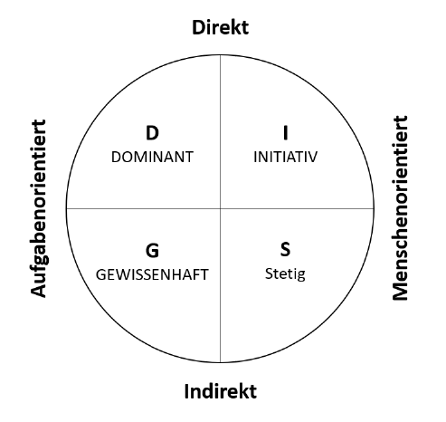
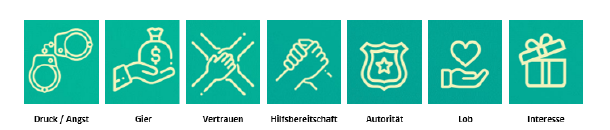
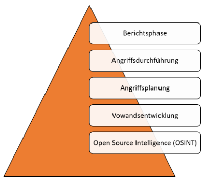

Kapitel:
Allgemeines zu Social Engineering
Angriffsmechanismen
Abwehrmechanismen
Ausblick
Allgemeines zu Social Engineering
Grundlagen Social Engineering
Definition Social Engineering
Beschreibt jede Handlung, die Person beinflusst, eine Handlung zu unternehmen, in gutem als auch schlechtem
Interesse
Geschichte und Motivation
Prinzip:Annahme, dass ein Mensch wie eine Maschine verbessert werden kann: Optimierung von Menschen
Kontext InfoSec: gezielte Manipulation von Einzelpersonen oder Gruppen
Motivation unterschiedlich:
-
soziale Gründe: Rache, Spaß, Macht
-
professionelle Gründe: Industriespionage, Identitätsdiebstahl
Social Engineering im Alltag
-
Informationen sind der Schlüssel
-
Vertraue, aber überprüfe
-
Informationen begrenzen und überwachen
Angriffsmechanismen
Grundlagen Angriffsmechanismen
Vorurteile und Klischees
-
Denken ist der Feind des Social Engineerings
-
Schwangere Frauen: Inbegriff für Gutes
-
Personen mit irischem Akzent: gastfreundlich, lustig, gesellig
Einordnung von Charaktertypen
Einschätzen von Charaktertypen und Wählen der richtigen Strategie
Unterscheidung Kommunikationsstil: Rolle autoritär oder zurückhaltend wählen.

Social Engineering und die Psychologie

- Reziprozität
Gegenseitigkeit oder Wechselbezüglichkeit und stellt ein Grundprinzip menschlichen Handelns dar.
Prinzip:
- Person A erweist Person B eine Gefälligkeit
- Anschließend verlangt Person B eine Gefälligkeit zurück
- Konsistenz
Wenn Entscheidung bewusst getroffen wurde, treten intra- und interpsychische Vorgänge ein.
- Motiv der Konsistenz so groß, dass etwaige Umentscheidung verworfen wird, um nach außen konsistent
zu wirken.
- Soziale Bewährtheit
Verhalten anderer wird als richtig angenommen und ggf. kopiert. Wirkt besonders stark, je mehr Unsicherheit
und Unklarheit involviert ist.
- Sympathie
Attraktiven Menschen werden positive Eigenschaften zugeschrieben.
- Gleiche Kleidung
- Gleiche Herkunft
- ...
- Autorität
Faktoren:
- Knappheit
Einschränkung von Verfügbarkeit beinflusst Wahrnehmung von Qualität.
Knappheitsprinzip:, Möglichkeiten erscheinen umso wertvoller, je weniger erreichbar sie sind.
- Abschlussbemerkung
Ziel ist es, andere dazu zu bringen, eine Entscheidung zu treffen, ohne nachzudenken.
Biologische Grundlagen
Alpha-/Beta-Modus
Im Alpha-Modus arbeitet Gehirn mit 8 bis 13 cps (zyklen pro Sekunde) -> Tagträumen, enstspannen,
fokussierte Konzentration
Im Beta-Modus 14 bis 100 cps. Gehirn ist wach, aufmerksam, nimmt Dinge auf, die um uns herum passieren.
Social Engineering setzt auf Alpha-Modus. Handeln ohne großes Nachdenken von Vorteil.
Vom emotionalen Denken bis zum logischen Handeln dauert es etwa 30 Sekunden. Diese Zeit reicht häufig bereits aus,
um Social Engineering zu Nutze zu machen. Erst danach fällt Betroffenem auf, was er getan hat.
Bindungstheorie
Andauerndes affektives Bindungsverhältnis zu bestimmten Personen.
Suchen nach körperlicher und psychischer Nähe.
Bezugsperson hat damit hohen EInfluss auf Entscheidungsfindung einer Person.
Oxytocin - The Molecule of Trust
Kuschelhormon. Kann Eigenschaft des Vertrauens hervorrufen.
Das Experiment rund ums Vertrauen
Teilnehmern werden 10 Dollar versprochen
Geld weiter senden wird verdreifacht
empfangende Person sendet etwas davon zurück
Je mehr Geld 2. Person erhält, desto mehr Oxytocin hatte diese Person im Blut
Je mehr Oxytoci, desto mehr Geld wurde wieder weitergegeben
Oxytocin verbindet mit anderen, lässt fühlen, was andere fühlen und lässt Menschen
großzügiger werden.
Dopamin - The Molecule of More
Wichtiger Neurotransmitter und "Botenstoff des Glücks".
- Assoziiert mit:
Kreativität,
emotionaler Intelligenz,
Abenteuerlust,
Risikofreude,
Besonders Abenteuerlust und Risikofreude für Social Engineering von Vorteil.
-
weniger Dopamin verbunden mit Introvertiertheit
-
Logisches und Faktenorientiertes Denken
-
Sprache oft monoton
Introvertiertes Verhalten und langsames Sprechen kann als Klassifikation genutzt werden.
Grundlagen der Kommunikation
Non-verbale Kommunikation
- Kinesik:
Beziehung zwischen nicht-sprachlichen Körperbewegungen (Erröten, Zucken, Augenbewegungen) und der
Kommunikation -> Körpersprache und wie Körper EMmotionen verrät.
- Embleme:
Non-verbale Bewegungen: Daumen Hoch
- Illustratoren
Gesten, die das Gesagte verstärken (meistens peripher und unbewusst eingesetzt)
- Manipulatoren
Jede Bewegung, die Manipulation oder Pflege eines Körperteils oder Kleidungsstücks aufgrund von Nervosität.
RGLT
Rhythmus, Geschwindigkeit, Lautstärke, Tonhöhe
Bezieht sich auf alles, was das Gesagte umgibt.
-
Ausdrücken von Gefühlen
-
Emotionen
Mögliche Umsetzungen
- Pronomen Wechsel: ich zu wir
- Stottern: evtl. Angst
- Veränderung Stimmlage: Emotionen zur Geltung bringen
- Fragen ausweichen
- Pausen machen
Proxemik
Nutzung des Raums
- öffentlicher Raum: Abstand von 3,5 - 7,5 Meter als akzeptabel eingeschätzt
- sozialer Raum: 1,2 - 3 Meter als angemessen eingeschätzt
- persönlicher Raum: als akzeptabel eingeschätzter Raum bei Familie, Freunden oder in Warteschlangen: 0,6 bis 1,2
Meter
- Intimer Raum: 30cm
Berührung
Integraler Bestandteil menschlicher Erfahrungen
Umarmung zur Freisetzung von Oxytocin
- Beruhigungsgesten
Folgen oft auf Situationen, in denen Unbehagen ausgelöst wird
Häufig Berühren an Hals und Nacken ->
Oft Zeichen für Druck, Bedrohung, Unwohlsein, Unsicherheit, Nervosität
Durch Berührung werden beruhigende Endorphine im Gehirn ausgeschüttet und man entspannt sich in Folge
- Laszive Geste
Werden eingesetzt um:
Aufmerksamkeit,
Interesse,
Nähe,
Hoffnung,
zu symbolisieren.
Beispiele:
Selbstberührung in Gesicht, Haaren und Armen,
Spielen mit Kleidung,
Schulterzucken,
Klimpern mit Wimpern,
- Authentizität von non-verbalen Signalen
Beine und Füße wichtiger Faktor
Authentizität nimmt von unten nach oben am Körper ab
Verkreuzte Beine stehen für Wohlfühlen ->
limbisches System erlaubt diese Geste nur, wenn das Gefühl von Sicherheit anherrscht
Gespräch zwischen 2 Personen, O berkörper zeigen zueinander, Füße jedoch in eine andere Richtung, Indiz für
Wunsch, an einem anderen ort zu sein
Augenkontakt
Ausruck verschiedener Bedeutungen:
- Lügen
- Dominanz
- Flirten
- Unbehagen
Geruchsstoffe
Assoziation mit Emotionen und Gefühlen.
Mögliche hervorzurufende Emotionen:
Ekel,
Angst
Social Engineering niemals Körpergeruch aussetzen, außer Vorwand lässt dies zu.
Musik
Musik kann Auslöser starker Emotionen und Gefühlen sein
Außerdem können Lieder an bestimmte Situationen erinnern
Forscher konnten erhöhte Dopamin Ausschüttung nachweisen
Gezieltes Einsetzen von Musik kann das Verhalten einer Person beeinflussen
Verkleidung
Kleidungsstücke oder Namensschilder, die Eindruck auf Leigimität der Handlung/Bitte bewirken sollen
Kann Schlussfolgerungen verursachen
-> Arztkittel,
Malerkittel
Gesichtsausdrücke
Menschliches Gesicht enthält viele Informationen zu Gefühlen der Personen.
Furcht, Freude, Trauer und Überraschung (von links nach rechts)
Emotionen erzeugen neben inneren Signalen auch von Außen sichtbare Veränderungen -> Mimik
Microexpressions Kurze und subtile Mimik zu verstehen, die dauert normalerweise 1/25 bis 1/5 einer Sekunde und
offenbart eine Emotion, die eine Person zu verbergen versucht.
Methoden des Social Engineerings
- Human-Based
Erolgt mithilfe von sozialer Interaktion und sozialen Beziehungen
- Computer-Based
Erfolgt durch technische Hilfsmittel. E-Mail Anhänge oder manipulierte Inernetseiten
- Reverse Social Engineering
Opfer wird dazu gebracht freiwillig und aktiv gewünschten Informationen zu übermitteln
Angriffspyramide:

Open Source Intelligence (OSINT)
OSINT nutzt freie, verfügbare, offene Quellen wie Printmedien und TV, Internet zur Sammlung von Informationen, die
anschließend zur Gewinnung von Erkenntnissen genutzt werden.
Vorwandsentwicklung
Basierend auf Erkenntnissen der OSINT-Phase sollen Vorwände geschaffen werden
Auswahl der passenden Hilfsmittel und/oder Tools
Angriffsplanung
Planung zu:
- Was ist der Plan?
- Wann ist der beste Zeitpunkt für den Angriff?
- Wer muss für Unterstützung bereit stehen?
Angriffsdurchführung
Angriffs durchführen.
Berichtsphase
Ergebnisse dokumentieren
Open Source Intelligence (OSINT)
Wichtiger Aspekt des Social Engineerings
Ausgang und Stützpunkt jedes Social Engineering Angriffes
Jede Art von Information hat einen Wert
Nicht technische Open Source Intelligence
- Physikalische Beschattung
- Nachstellen
- Beobachten
- Belauschen
-> Auskundschaften von Routinen, Zeitplänen, Vorlieben, Abneigungen
Zusammenfassung
- Daten größtes Kapital eines Social Engineers
- Sammeln von Daten häufig mühselig
- Entscheidend für die Angriffsplanung
- Diskreter Ablauf
- Profilerstellung
Vorwandsentwicklung (Pretexting)
Schritt, sich als jemand Anderen auszugeben, um an private Informationen zu gelangen.
Schaffung einer neuen Identität oder Annehmen einer anderen Identität.
Prinzipien:
- Stets an Ziele denken
- Wahl der richtigen Identität,
OSINT als Basis für richtige Wahl der Person
- Realität vs. Erfindung verstehen
- Nicht in Details verlieren
- Grenzen kennen
- Verlust des Kurzzeitgedächtnisses
- Unterstützung für das Pretexting
- Überlegen von Antworten im Vorhinein,
Im Vorhinein üben
Angriffsplanung
Rapport
Bezeichnet eine aktuell vertrauensvolle, von wechselseitiger empathischer Aufmerksamkeit getragene Beziehung, d.h.
„guten Kontakt“ zwischen zwei Menschen.
Prinzipien beim Aufbau von Rapport
- Künstliche Zeitbeschränkungen
- Zeitspanne kurz halten, um zeitlichen Druck zu erzeugen
- Fluchtweg Konversation zu beenden
- Die non-verbale Kommunikation anpassen
-
Non-Verbale Körpersprache an Situation anpassen
- Herabgesetzte Sprechgeschwindigkeit
- Sympathie- oder Hilfethemen
- Das Ego beiseitestellen
- Gedanken, Meinungen, ... anderer zu akzeptieren
auch wenn sie nicht der eigenen entspricht
- Bestätigung
-
Leuten Bestätigung in ihrer Meinung/Argumentation geben
- Ausschüttung von Dopamin und Oxytocin
- Wie-, Wann oder Warum-Fragen stellen
-
Details erfahren
- Denkweise anderer erfahren
- Quid pro quo
-
genügend von sich selbst preisgeben, sodass Zielperson das Gefühl hat, Sie asureichend zu kennen
- Gegenseitiger Altruismus
- Gegenseitiges Tür aufhalten
- Gefühl, dass man sich für etwas revanchieren muss
- Umgang mit den eigenen Ansprüchen
- Methoden nicht überschreiten
- Übermut kann Rapport wieder vernichten
- Rechtzeitig beenden
-> Wichtigster Grundsatz beim Rapport: Vertrauen durch Gleichheit herzustellen
Der eigene Name
Namen haben starken Einfluss
leichtaussprechbare Namen haben einen positiven Effekt
Angriffsdurchführung
- Ködern (Baiting)
- Kostenlose Geschenke
- Durchschlüpfen (Tailgating)
- Zugang zu physisch verschlossenen Bereichen erlangen, indem man hinter einer berechtigten Person durch
eine
Tür schlüpft.
- Spam E-Mails
- Phishing
- Traditionelles Phising
- generische Mails
- Einfache Zustellmechanismen
- Große Menge an Zielen
- Spear-Phishing
- Personalisierte Tools
- Nutzung moderner Mechanismen (TLS)
- Individueller Angriff auf Einzelpersonen
- Smishing und Vishing
- Smishing
- Stehlen von Daten mittels SMS
- Weiterleiten auf betrügerische Seite
- Vishing
- Angriff mittels eines Anrufs
- Technische Unterstützung
- Social Engineer Toolkit (SET) (Kali Suite) ->Erstellung von Phising Webseiten
- Burner Phone (Wegwerfhandys)
- Caller ID Spoofing
- Kamera
- GPS Tracker
- Lock Picking
- Aufnahmegerät
- RFID-Analyse -> emulierene, klonen
Berichterstattung
- Letzte Phase
- Wissen für Auftragsgeber
Bekannte Angriffe
- Twitter Bitcoin Scam
- CEO-Betrug bei Leoni
- Präsidentschaftswahl E-Mail Leak
- Toyota Boshoku Corporation BEC attack (Business-Email-Compromise)
- Yahoo Datendiebstahl
Auswirkungen - Schadenspotenzial
- Finanzieller Schaden
- Reputation
Abwehrmechanismen
Security Awarenes
Bewusstsein für das Thema Sicherheit entwickeln
- Zusammenspiel von Wissen, Können, Wollen
- Sensibilisieren gegen Sicherheitsbedrohungen im Alltag
Wie wird Security Awareness vermittelt?
- Training
- Lesen
- Hören
Security Awareness evaluieren
- Fragebögen
Security-Awareness-Testing
- Mittels Phising Simulationen
- Schafft Transparenz
- Erhöht Security Awareness
Technische und organisatorische Maßnahmen
Zugangskontrolle
- Passwörter und Passwortkomplexität
- MFA
Zutrittskontrolle
- Fingerabdruck
- Iris- oder Netzhautscan
- Handflächenabdruck
- Handvenenerkennung
- Gesichtsmerkmale
Kombination schafft hohe Sicherheit
Zugriffskontrolle
- Kernkomponente der Datensicherheit
- Wer darf Unternehmensdaten abrufen und verwenden
- Authentifizierung
- Autorisierung
- Abfragen Identität
- Einteilung von Daten in:
- Öffentlich
- Intern (General)
- Vertraulich
- Streng vertraulich
- Geheim
Vorfilterung von Nachrichten
- Durch Beschränkung des Empfangs von Nachrichten, kann die Empfänger verschont bleiben
- Spam-Filter
Umgang mit auffälligen Handlungen
- Benachrichtigung von Fachleuten
Regulatorische Maßnahmen
-
Gesetze
-
Normen
-
Grundsätze
-
ISO27001
-
BSI Grundschutz
-
DSGVO
Ausblick
- Home-Office
- Daten gegen Lösegeld
- Angriffe mit KI
- Verteidigung mt KI
- Gamification -> Awareness Schaffung mit spielerischem Ansatz
- Regulatorische Veränderungen -> verschärfte Anforderungen durch Behörden
- Sicherheit gemeinsam angehen